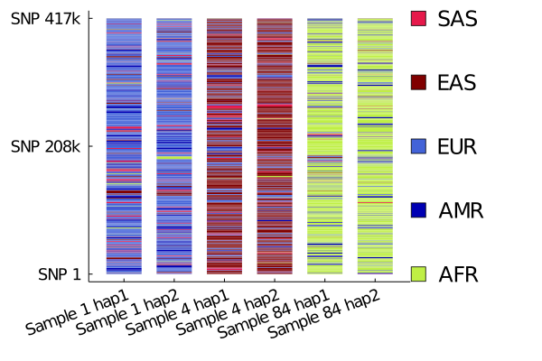

Estimating ancestry
If samples in the reference haplotype panel are labeled with a population origin, MendelImpute can also be used for:
- Estimate admixed proportions
- Chromosome painting
# first load all necessary packages
using MendelImpute
using VCFTools
using GeneticVariation
using Random
using DataFrames
using Plots
using JLSO
using CSVData preparation
Step 1. Filter chromosome data
We use the 1000 genomes chromosome 22 as illustration. The original data is filtered into target and reference panels. Follow detailed example in Phasing and Imputation to obtain the same data.
In practice, it is better to infer ancestry of admixed populations using non-admixed reference populations. The example here is a simplified illustration and should not be taken too literally.
Step 2. Process each sample's population origin
MendelImpute needs to know each reference sample's origin (country/ethnicity/region...etc). This origin information should be provided by the reference haplotype panel, but users are free to further organize origin labels base on their own criteria. As in our paper, we use super-populations.
To do so, we need to create a Dict{key, value} where each key is a sample ID and the value is the population code. This will be used for both the paint and composition function.
# map population to super-population
pop_to_superpop = Dict{String, String}()
# 5 east asian
pop_to_superpop["CHB"] = "EAS"; pop_to_superpop["JPT"] = "EAS"; pop_to_superpop["CHS"] = "EAS";
pop_to_superpop["CDX"] = "EAS"; pop_to_superpop["KHV"] = "EAS";
# 5 european
pop_to_superpop["CEU"] = "EUR"; pop_to_superpop["TSI"] = "EUR"; pop_to_superpop["FIN"] = "EUR";
pop_to_superpop["GBR"] = "EUR"; pop_to_superpop["IBS"] = "EUR";
# 7 african
pop_to_superpop["YRI"] = "AFR"; pop_to_superpop["LWK"] = "AFR"; pop_to_superpop["GWD"] = "AFR";
pop_to_superpop["MSL"] = "AFR"; pop_to_superpop["ESN"] = "AFR"; pop_to_superpop["ASW"] = "AFR";
pop_to_superpop["ACB"] = "AFR";
# 4 ad mixed americans
pop_to_superpop["MXL"] = "AMR"; pop_to_superpop["PUR"] = "AMR"; pop_to_superpop["CLM"] = "AMR";
pop_to_superpop["PEL"] = "AMR";
# 5 south asian
pop_to_superpop["GIH"] = "SAS"; pop_to_superpop["PJL"] = "SAS"; pop_to_superpop["BEB"] = "SAS";
pop_to_superpop["STU"] = "SAS"; pop_to_superpop["ITU"] = "SAS";# read population origin into a dataframe
file = joinpath(normpath(MendelImpute.datadir()), "1000genomes.population.txt")
df = CSV.read(file, DataFrame)
# create dictionary with key = ID, value = population
refID_to_population = Dict{String, String}()
refID_to_superpopulation = Dict{String, String}()
for (id, population) in eachrow(df)
refID_to_population[id] = population
refID_to_superpopulation[id] = pop_to_superpop[population]
end
refID_to_superpopulationDict{String,String} with 2504 entries:
"HG01791" => "EUR"
"HG02736" => "SAS"
"HG00182" => "EUR"
"HG03914" => "SAS"
"HG00149" => "EUR"
"NA12156" => "EUR"
"HG02642" => "AFR"
"HG02851" => "AFR"
"NA19835" => "AFR"
"NA19019" => "AFR"
"HG01131" => "AMR"
"HG03578" => "AFR"
"NA18550" => "EAS"
"HG02401" => "EAS"
"HG01350" => "AMR"
"HG03973" => "SAS"
"NA07000" => "EUR"
"HG01709" => "EUR"
"HG01395" => "AMR"
"HG01980" => "AMR"
"HG01979" => "AMR"
"HG01122" => "AMR"
"HG03869" => "SAS"
"HG03729" => "SAS"
"NA19920" => "AFR"
⋮ => ⋮Note the population codes for 1000 genome's samples are explained here.
Step 3. Compute phase information using MendelImpute
This is equivalent to running a typical imputation. Please ensure that:
- The output file name ends with
.jlso(save output to ultra-compressed format) impute = true(so the output contains the entire chromosome)
Note data used here is prepared in Detailed Example.
# compute each person's phase information
tgtfile = "target.chr22.typedOnly.masked.vcf.gz"
reffile = "ref.chr22.maxd1000.excludeTarget.jlso"
outfile = "mendel.imputed.jlso"
@time ph = phase(tgtfile, reffile, outfile);Number of threads = 1
Importing reference haplotype data...
[32mComputing optimal haplotypes...100%|████████████████████| Time: 0:00:28[39m
[32mPhasing...100%|█████████████████████████████████████████| Time: 0:00:05[39m
Total windows = 1634, averaging ~ 508 unique haplotypes per window.
Timings:
Data import = 13.8493 seconds
import target data = 3.61007 seconds
import compressed haplotypes = 10.2393 seconds
Computing haplotype pair = 28.5288 seconds
BLAS3 mul! to get M and N = 1.20264 seconds per thread
haplopair search = 22.9585 seconds per thread
initializing missing = 0.121591 seconds per thread
allocating and viewing = 0.337528 seconds per thread
index conversion = 0.014748 seconds per thread
Phasing by win-win intersection = 5.92058 seconds
Window-by-window intersection = 0.581821 seconds per thread
Breakpoint search = 4.05849 seconds per thread
Recording result = 0.146574 seconds per thread
Imputation = 3.65652 seconds
Imputing missing = 0.0221378 seconds
Writing to file = 3.63439 seconds
Total time = 52.1137 seconds
58.377736 seconds (96.50 M allocations: 5.471 GiB, 4.24% gc time)Estimate admixture proportions
- The composition will compute a list of percentages where
composition[i]equals the sample's ancestry (in %) frompopulations[i]. - This illustration depends on data preparation above.
Step 1: import necessary data
# First import compressed reference panel
reffile = "ref.chr22.maxd1000.excludeTarget.jlso"
compressed_Hunique = MendelImpute.read_jlso(reffile)
panelID = compressed_Hunique.sampleID
# also need target sample's ancestry
tgtfile = "target.chr22.typedOnly.masked.vcf.gz"
reader = VCF.Reader(openvcf(tgtfile, "r"))
tgtID = VCF.header(reader).sampleID
sample_population = [refID_to_population[id] for id in tgtID]
sample_superpopulation = [refID_to_superpopulation[id] for id in tgtID];# here is each sample's super-population (sample 1 is EUR, sample 3 is EAS...etc)
sample_superpopulation100-element Array{String,1}:
"EUR"
"EUR"
"EAS"
"EAS"
"EAS"
"EAS"
"AMR"
"AMR"
"AMR"
"AMR"
"EUR"
"AMR"
"EUR"
⋮
"AMR"
"AFR"
"AFR"
"EUR"
"EUR"
"EUR"
"EUR"
"EUR"
"EUR"
"EUR"
"SAS"
"SAS"Step 2: call composition function
- The composition will compute a list of percentages where
composition[i]equals the sample's ancestry (in %) frompopulations[i]. - We are finally using the imputation result stored in
ph.
populations = MendelImpute.unique_populations(refID_to_superpopulation)
@time sample1_comp = composition(ph[1], panelID, refID_to_superpopulation) # origin GBR (EUR)
@time sample4_comp = composition(ph[4], panelID, refID_to_superpopulation) # origin CHS (EAS)
@time sample84_comp = composition(ph[84], panelID, refID_to_superpopulation) # origin LWK (AFR)
println("sample 1 = ", round(sample1_comp[1], digits=3), " S. asian")
println("sample 1 = ", round(sample1_comp[2], digits=3), " E. asian")
println("sample 1 = ", round(sample1_comp[3], digits=3), " European")
println("sample 1 = ", round(sample1_comp[4], digits=3), " Admixed-American")
println("sample 1 = ", round(sample1_comp[5], digits=3), " Africans\n")
println("sample 4 = ", round(sample4_comp[1], digits=3), " S. asian")
println("sample 4 = ", round(sample4_comp[2], digits=3), " E. asian")
println("sample 4 = ", round(sample4_comp[3], digits=3), " European")
println("sample 4 = ", round(sample4_comp[4], digits=3), " Admixed-American")
println("sample 4 = ", round(sample4_comp[5], digits=3), " Africans\n")
println("sample 84 = ", round(sample84_comp[1], digits=3), " S. asian")
println("sample 84 = ", round(sample84_comp[2], digits=3), " E. asian")
println("sample 84 = ", round(sample84_comp[3], digits=3), " European")
println("sample 84 = ", round(sample84_comp[4], digits=3), " Admixed-American")
println("sample 84 = ", round(sample84_comp[5], digits=3), " Africans"); 0.003909 seconds (26 allocations: 2.000 KiB)
0.000167 seconds (6 allocations: 544 bytes)
0.000185 seconds (6 allocations: 544 bytes)
sample 1 = 0.652 S. asian
sample 1 = 0.088 E. asian
sample 1 = 0.023 European
sample 1 = 0.17 Admixed-American
sample 1 = 0.067 Africans
sample 4 = 0.189 S. asian
sample 4 = 0.061 E. asian
sample 4 = 0.01 European
sample 4 = 0.053 Admixed-American
sample 4 = 0.687 Africans
sample 84 = 0.065 S. asian
sample 84 = 0.014 E. asian
sample 84 = 0.784 European
sample 84 = 0.111 Admixed-American
sample 84 = 0.025 AfricansHere sample1_comp[i] equals the sample's estimated ancestry (in %) from populations[i].
Conclusion: We computed the population percentages for sample 1, 4, and 84 with respect to the 5 reference super populations. Thus sample 1 is 65% European, 10% South Asian, 20% American...etc. Sample 4 is 20% European, 70% East Asian,...etc. Sample 84 is 80% African and 5% European...etc.
Chromosome painting
The main function is the paint function. For an imputed sample, it will convert each haplotype segment into a percentage indicating the segment's length in the chromosome. Then the list can be used for easy plotting.
Note: this illustration depends on data preparation above.
Step 1: Choose your colors
In this example, colors are arranged such that:
- Blue ≈ European/American
- Red ≈ South/East Asian
- Green ≈ African
Of course, Julia lets you plot your favoriate colors. We pick our colors here: https://mdigi.tools/color-shades/#008000.
continent = ["SAS", "EAS", "EUR", "AMR", "AFR"]
continent_colors = [colorant"#e6194B", colorant"#800000", colorant"#4363d8", colorant"#0000b3", colorant"#bfef45"]
Step 2: Run paint funcion
This function convert the imputed haplotype segments into a list of percentages (one list for each strand). This is simply a post-processing routine so that data can be used for easy plotting later.
populations = unique_populations(refID_to_superpopulation)
@time sample1_s1_comp, sample1_s2_comp = paint(ph[1], panelID, refID_to_superpopulation, populations=populations)
@time sample4_s1_comp, sample4_s2_comp = paint(ph[4], panelID, refID_to_superpopulation, populations=populations)
@time sample84_s1_comp, sample84_s2_comp = paint(ph[84], panelID, refID_to_superpopulation, populations=populations); 0.072840 seconds (122.95 k allocations: 6.250 MiB)
0.000099 seconds (12 allocations: 19.906 KiB)
0.000104 seconds (12 allocations: 22.406 KiB)Step 3: Generate plots for painted chromosomes
We found the StatsPlots.jl package to be more useful for this purpose, although the code below still did the plotting in a very roundabout way.
using StatsPlots, FixedPointNumbers
# assign a color to each haplotype segment
sample1_s1_colors = [continent_colors[findfirst(x -> x == pop, continent)] for pop in sample1_s1_comp[2]]
sample1_s1_colors = reshape(sample1_s1_colors, 1, length(sample1_s1_colors))
sample1_s2_colors = [continent_colors[findfirst(x -> x == pop, continent)] for pop in sample1_s2_comp[2]]
sample1_s2_colors = reshape(sample1_s2_colors, 1, length(sample1_s2_colors))
sample4_s1_colors = [continent_colors[findfirst(x -> x == pop, continent)] for pop in sample4_s1_comp[2]]
sample4_s1_colors = reshape(sample4_s1_colors, 1, length(sample4_s1_colors))
sample4_s2_colors = [continent_colors[findfirst(x -> x == pop, continent)] for pop in sample4_s2_comp[2]]
sample4_s2_colors = reshape(sample4_s2_colors, 1, length(sample4_s2_colors))
sample84_s1_colors = [continent_colors[findfirst(x -> x == pop, continent)] for pop in sample84_s1_comp[2]]
sample84_s1_colors = reshape(sample84_s1_colors, 1, length(sample84_s1_colors))
sample84_s2_colors = [continent_colors[findfirst(x -> x == pop, continent)] for pop in sample84_s2_comp[2]]
sample84_s2_colors = reshape(sample84_s2_colors, 1, length(sample84_s2_colors));
# roundabout code for plotting...
sample1_s1l = length(sample1_s1_comp[1])
sample1_s2l = length(sample1_s2_comp[1])
sample4_s1l = length(sample4_s1_comp[1])
sample4_s2l = length(sample4_s2_comp[1])
sample84_s1l = length(sample84_s1_comp[1])
sample84_s2l = length(sample84_s2_comp[1])
maxlen = max(sample1_s1l, sample1_s2l, sample4_s1l, sample4_s2l, sample84_s1l, sample84_s2l)
mydata = zeros(6, maxlen)
copyto!(@view(mydata[1, 1:sample1_s1l]), sample1_s1_comp[1])
copyto!(@view(mydata[2, 1:sample1_s2l]), sample1_s2_comp[1])
copyto!(@view(mydata[3, 1:sample4_s1l]), sample4_s1_comp[1])
copyto!(@view(mydata[4, 1:sample4_s2l]), sample4_s2_comp[1])
copyto!(@view(mydata[5, 1:sample84_s1l]), sample84_s1_comp[1])
copyto!(@view(mydata[6, 1:sample84_s2l]), sample84_s2_comp[1])
pop_colors = Matrix{RGB{Normed{UInt8,8}}}(undef, 6, maxlen)
copyto!(@view(pop_colors[1, 1:sample1_s1l]), sample1_s1_colors)
copyto!(@view(pop_colors[2, 1:sample1_s2l]), sample1_s2_colors)
copyto!(@view(pop_colors[3, 1:sample4_s1l]), sample4_s1_colors)
copyto!(@view(pop_colors[4, 1:sample4_s2l]), sample4_s2_colors)
copyto!(@view(pop_colors[5, 1:sample84_s1l]), sample84_s1_colors)
copyto!(@view(pop_colors[6, 1:sample84_s2l]), sample84_s2_colors)
xnames = ["Sample 1 hap1", "Sample 1 hap2", "Sample 4 hap1", "Sample 4 hap2", "Sample 84 hap1", "Sample 84 hap2"]
ynames = ["SNP 1", "SNP 208k", "SNP 417k"]
# color haplotypes
chrom_plt2 = groupedbar(mydata, bar_position = :stack, bar_width=0.7, label=:none,
lw = 0, color=pop_colors, xticks=(1:1:6, xnames), yticks=(0:0.5:1, ynames),
ytickfont=font(12), xtickfont=font(12), xrotation=20, right_margin = 35Plots.mm,
grid=false)
# create a plot for legend
color_x = ones(5)
color_y = collect(1:1:5)
admixture_chrom_plt = scatter!(color_x, color_y, color=reverse(continent_colors), ytick=(1:1:5, reverse(continent)),
xrange=(0.9, 1.1), xtick=false, label=:none, markersize=8, ytickfont=font(16),
grid=false, framestyle=:grid, mirror=true, tick_direction=:out, markershape=:rect,
inset = (1, bbox(-0.05, 0.0, 0.05, 1.0, :bottom, :right)), subplot = 2)
Conclusion:
- We can visualize the linkage patterns for the 3 samples across their 6 haplotypes
- Sample 1 is mostly European and admixed American, sample 2 is mainly South/East Asian, and sample 3 is mainly African.
Note: this example should not be taken too literally, since we did not exclude admixed samples from the reference panel. For more details, please refer to our paper, or file an issue on GitHub.